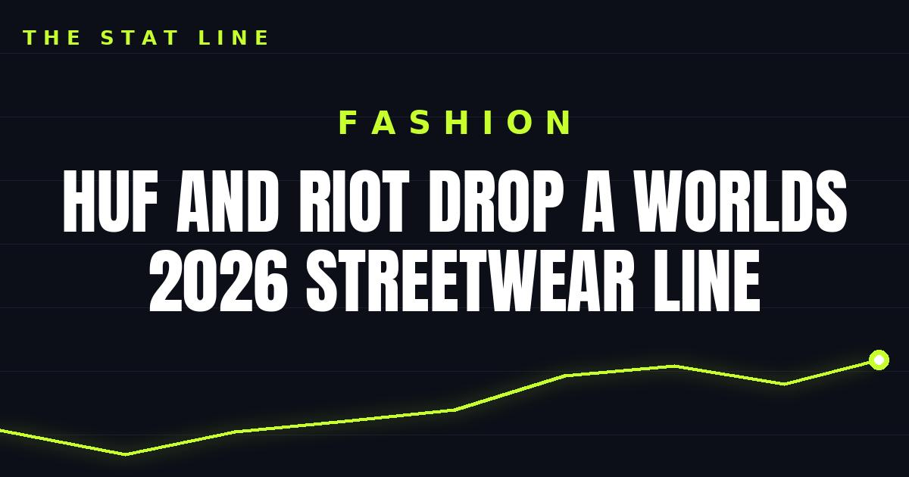

HUF and Riot drop a Worlds 2026 streetwear line
HUF's Worlds 2026 streetwear collab with Riot launched October 13 at the Riot Games Merch Store — varsity jackets, hoodies, tees, and blind-bag skateboard decks built from past North American Worlds skins — with a wider release on October 22.

Disclosure: this post contains affiliate links. I earn a commission on qualifying purchases.
Skate brand HUF teamed with Riot Games for a League of Legends Worlds 2026 streetwear line, and select styles went on sale October 13 at the Riot Games Merch Store. The graphics pull from past North American Worlds skins — a wearable archive of the tournament's home-soil years.
What to know
First drop: October 13, Riot Games Merch Store
Wider release: October 22, via huf's website and select retailers
Riven chase deck: 150 pieces worldwide
The lineup spans a varsity jacket, pullover hoodie, graphic tees, and headwear, plus four blind-bag skateboard decks — and a glitter-foil Riven chase deck limited to 150 pieces worldwide. That's the one collectors will hunt.
Why it works
Worlds 2026 is an American tournament, so the concept lands: championship skins tied to past North American Worlds become streetwear graphics. For longtime fans, every piece doubles as a history lesson in what made competitive League of Legends on home soil. And the blind-bag decks with a 150-piece chase variant are built for the hype cycle — scarcity plus skate-culture nostalgia is a potent combination.
Source: GenZ NewZ — huf x League of Legends: Worlds 2026 streetwear drop